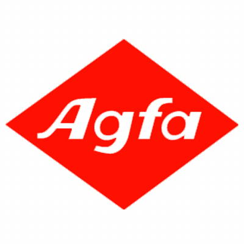

Full-Stack Web Development: Developed Developer Web Console for the product - Dynamic Edge Processing(DEP). The client side of the website is based on SAP UI5, which is a MVC based framework. And backend is a node.js server. Tasks included creating new webpages for configuring plugins, implementing new UI requirements, creating web services/apis and fixing generic web bugs
Created/Update database tables, stored procedures, triggers, views in SQL Anywhere(a database used in SAP) to support APIs in web backend and the "IOT Adapter Engine".
Java Development: The "IOT Adapter Engine" is a java program used to parse and route data reading inputs from different sources to corresponding enterprise or edge end points
Python Script Development: Created "ESP Silent Install" script to silently install ESP. ESP is a real-time data streaming project in DEP. All install options are hard coded and user is able to specify insatll path.

JAVA Developer
(2016/05 - 2016/08)
Platform Conversion: Architected and Converted automation tests from an old and fragile
platform to a new system in JUnit. The tests cover basic functionality including querying,
storing, retrieving data. Advanced functions like data sharing; merging and modifying data are
also covered.
JMX Utility Tool Implementation: Got involved in STUI implemented. STUI is a command
line utility tool written in Java to manipulate JXM Attributes. Applied knowledge of visitor design pattern in this project. Also learnt Eclipse Remote Debugging feature (which is really cool)
General Artifact Fixing and Function Implementation: Wrote Java, html, css, javascript code to fix assigned
artifacts or new function implementation.
Agile Development method; Code review; All tasks are performed in Linux VM
QA Developer
(2014/09 - 2014/12)
This is the first project I got involved at enterprise level
Android App Development: Designed and developed Mobile Device Management (MDM)
Automation-Test Application.The app is able to scan the settings applied in a smart device and parse data to server. The server reads the actual value from devices, expected value from JIRA and do the comparison. The test results will be automatically uploaded back to JIRA.
Manual Testing: Performed manual tests in MDM; Worked on test cases and user stories; Reported bugs and closed bugs tickets. Learnt various testing method like unit test, regression test and so on
SQL Developer
(2015/05 - 2015/08)
Business Analyst: Attended workshops with the vendor (SAP) and the consultant (Deloitte) to
discuss, analyze and document the business needs of the "SuccessFactor".
Automation: Created automation-testing scripts for the project. The automation was done in
HPQTP. The scripts were written in VBA.
Manual Testing and documentation: Documented configuration book based on user stories and requirement. Also created concrete test cases according to the requirement book.